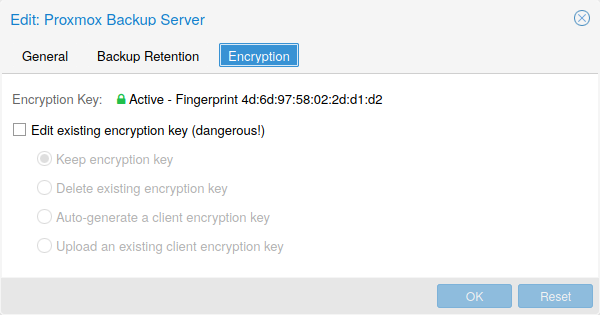

Storage pool type: pbs
This backend allows direct integration of a Proxmox Backup Server into Proxmox VE like any other storage.
A Proxmox Backup storage can be added directly through the Proxmox VE API, CLI or the web interface.
The backend supports all common storage properties, except the shared flag, which is always set. Additionally, the following special properties to Proxmox Backup Server are available:
8007. Optional.
Do not forget to add the realm to the username. For example, root@pam or
archiver@pbs.
/etc/pve/priv/storage/<STORAGE-ID>.pw with access restricted to the root
user. Required.
proxmox-backup-manager cert info
command. Required for self-signed certificates or any other one where the host
does not trusts the servers CA.
/etc/pve/priv/storage/<STORAGE-ID>.enc with access
restricted to the root user. Use the magic value autogen to automatically
generate a new one using proxmox-backup-client key create --kdf none <path>.
Optional.
/etc/pve/priv/storage/<STORAGE-ID>.master.pem with access restricted to the
root user.
The encrypted copy of the backup encryption key will be appended to each backup
and stored on the Proxmox Backup Server instance for recovery purposes.
Optional, requires encryption-key.
Configuration Example (/etc/pve/storage.cfg).
pbs: backup
datastore main
server enya.proxmox.com
content backup
fingerprint 09:54:ef:..snip..:88:af:47:fe:4c:3b:cf:8b:26:88:0b:4e:3c:b2
prune-backups keep-all=1
username archiver@pbs
encryption-key a9:ee:c8:02:13:..snip..:2d:53:2c:98
master-pubkey 1
Proxmox Backup Server only supports backups, they can be block-level or file-level based. Proxmox VE uses block-level for virtual machines and file-level for container.

Optionally, you can configure client-side encryption with AES-256 in GCM mode.
Encryption can be configured either via the web interface, or on the CLI with
the encryption-key option (see above). The key will be saved in the file
/etc/pve/priv/storage/<STORAGE-ID>.enc, which is only accessible by the root
user.
Without their key, backups will be inaccessible. Thus, you should keep keys ordered and in a place that is separate from the contents being backed up. It can happen, for example, that you back up an entire system, using a key on that system. If the system then becomes inaccessible for any reason and needs to be restored, this will not be possible as the encryption key will be lost along with the broken system.
It is recommended that you keep your key safe, but easily accessible, in
order for quick disaster recovery. For this reason, the best place to store it
is in your password manager, where it is immediately recoverable. As a backup to
this, you should also save the key to a USB flash drive and store that in a secure
place. This way, it is detached from any system, but is still easy to recover
from, in case of emergency. Finally, in preparation for the worst case scenario,
you should also consider keeping a paper copy of your key locked away in a safe
place. The paperkey subcommand can be used to create a QR encoded version of
your key. The following command sends the output of the paperkey command to
a text file, for easy printing.
# proxmox-backup-client key paperkey /etc/pve/priv/storage/<STORAGE-ID>.enc --output-format text > qrkey.txt
Additionally, it is possible to use a single RSA master key pair for key recovery purposes: configure all clients doing encrypted backups to use a single public master key, and all subsequent encrypted backups will contain a RSA-encrypted copy of the used AES encryption key. The corresponding private master key allows recovering the AES key and decrypting the backup even if the client system is no longer available.
The same safe-keeping rules apply to the master key pair as to the
regular encryption keys. Without a copy of the private key recovery is not
possible! The paperkey command supports generating paper copies of private
master keys for storage in a safe, physical location.
Because the encryption is managed on the client side, you can use the same datastore on the server for unencrypted backups and encrypted backups, even if they are encrypted with different keys. However, deduplication between backups with different keys is not possible, so it is often better to create separate datastores.
Do not use encryption if there is no benefit from it, for example, when you are running the server locally in a trusted network. It is always easier to recover from unencrypted backups.
You can get a list of available Proxmox Backup Server datastores with:
# pvesm scan pbs <server> <username> [--password <string>] [--fingerprint <string>]
Then you can add one of these datastores as a storage to the whole Proxmox VE cluster with:
# pvesm add pbs <id> --server <server> --datastore <datastore> --username <username> --fingerprint 00:B4:... --password